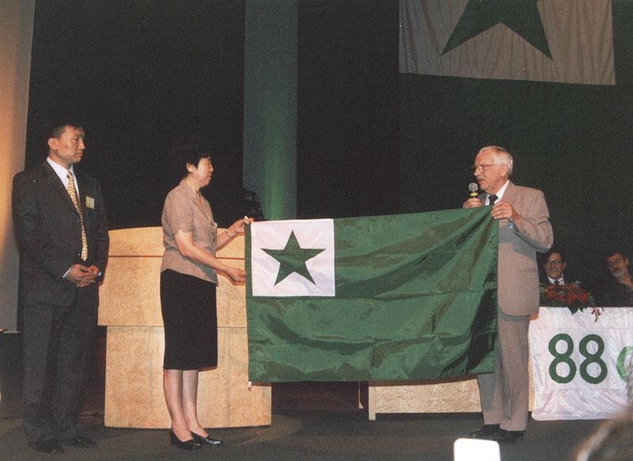

Mapa Interactivo
Conoce los últimos 10 congresos internacionales de Esperanto
Conoce los últimos 10 congresos internacionales de Esperanto

Mapa mundi con ubicaciones de los últimos 10 Congresos de Esperanto
Haz clic en alguno de los pequeños botones para ver información sobre el lugar.